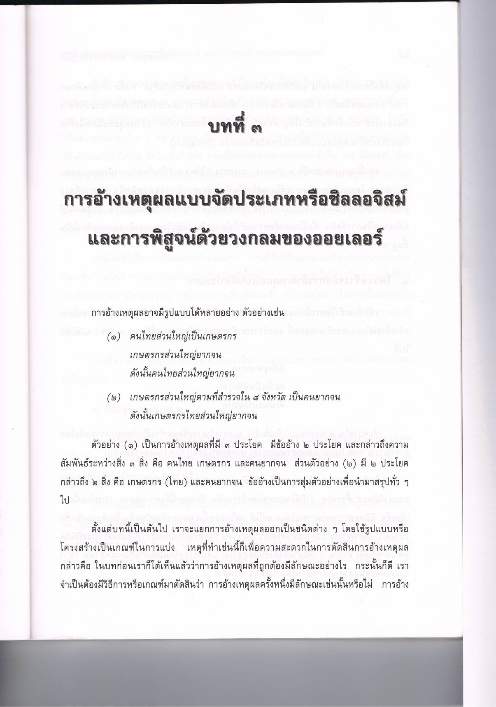
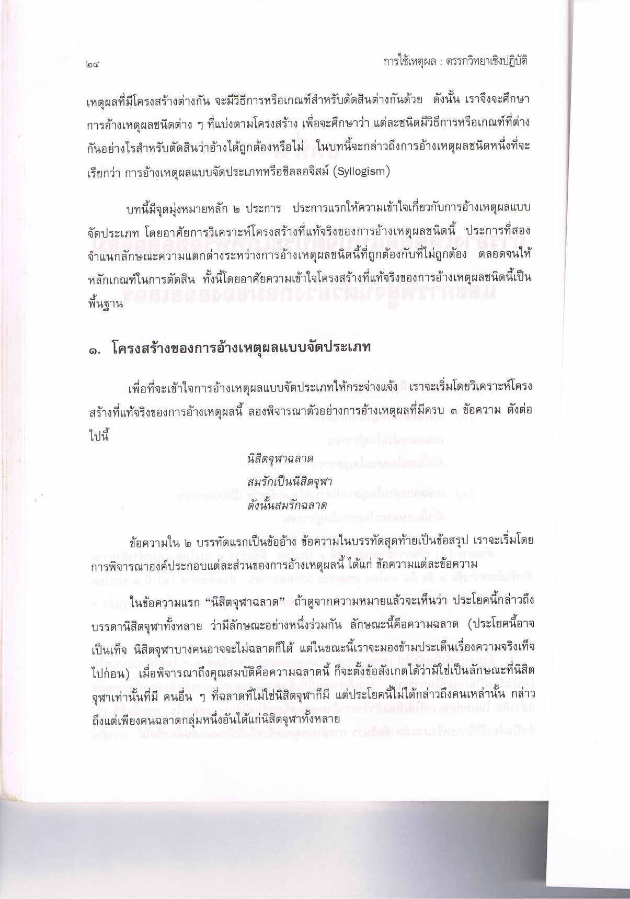
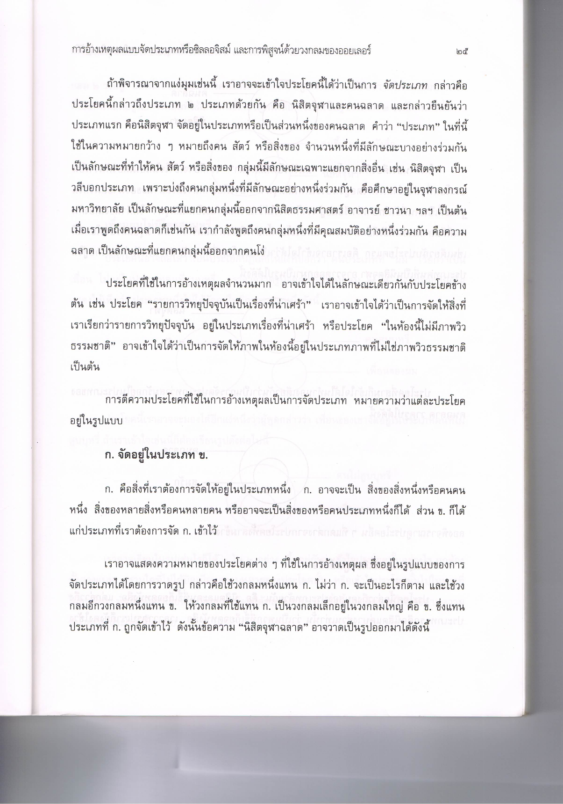
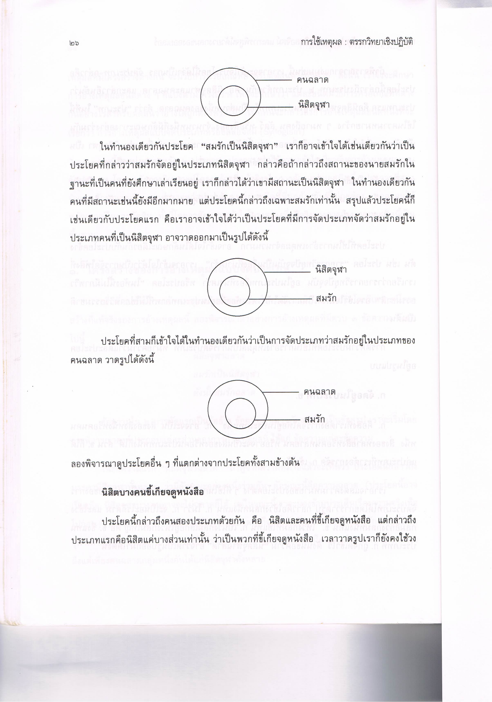
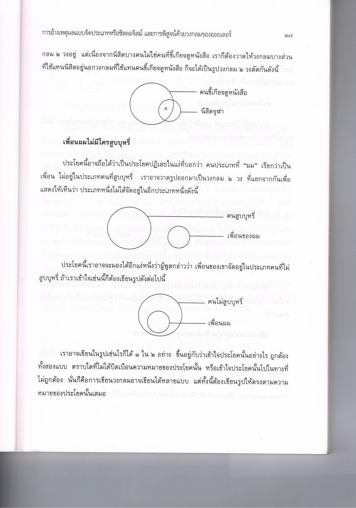
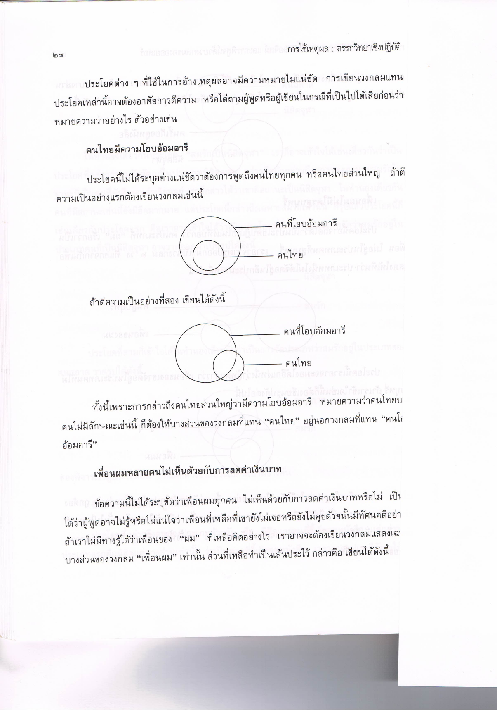
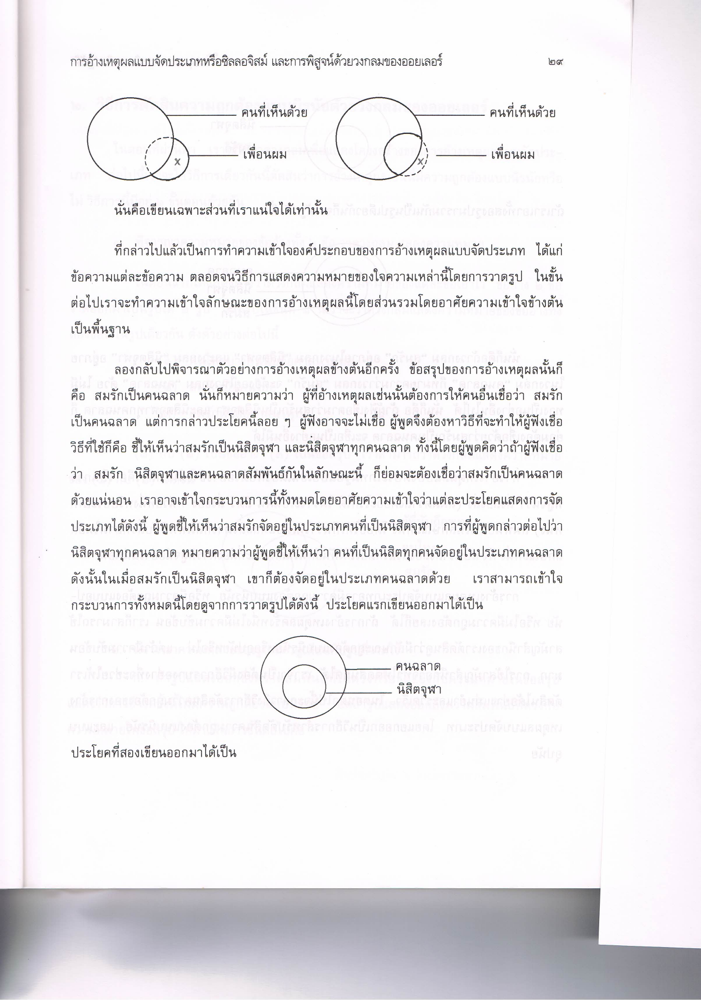
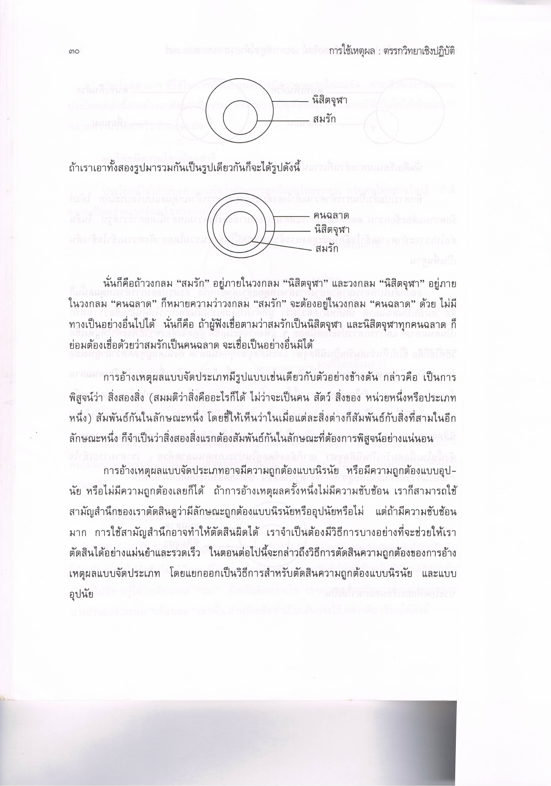

การอ้างเหตุผลแบบจัดประเภท (Syllogism) และการใช้วงกลมออยเลอร์ในการพิสูจน์
- การใช้เหตุผล: ตรรกวิทยาเชิงปฏิบัติ
- การใช้ตรรกะในการอ้างเหตุผล โดยการเชื่อมโยงประเด็นต่าง ๆ ที่สามารถพิสูจน์ได้ -
- การอ้างเหตุผลแบบ ซิลลอจิสม์ (Syllogism) เช่น การจัดกลุ่มคนตามลักษณะต่าง ๆ
- โครงสร้างของการอ้างเหตุผลแบบซิลลอจิสม์
- การจัดหมวดหมู่บุคคลเช่น "สมรัก" เป็น "นิสิตจุฬา" และ "คนฉลาด"
- การอนุมานว่า "สมรัก" เป็น "คนฉลาด" เนื่องจากเป็นส่วนหนึ่งของกลุ่ม "นิสิตจุฬา" และ "คนฉลาด"
- การแสดงความสัมพันธ์ระหว่างกลุ่ม
- การใช้ตรรกะเชิงอนุมานในการพิสูจน์ความสัมพันธ์ระหว่างหมวดหมู่ต่าง ๆ (เช่น ชาว "นิสิตจุฬา" และ "คนฉลาด")
- การใช้ตรรกะในระดับต่าง ๆ เพื่อแสดงความสัมพันธ์ที่ชัดเจน
- การใช้คำจำกัดความที่ชัดเจน
- ความสำคัญของการใช้คำจำกัดความที่ชัดเจนสำหรับแต่ละกลุ่ม เช่น "คนฉลาด" หรือ "นิสิตจุฬา" เพื่อให้การอนุมานเป็นไปได้อย่างแม่นยำ
- หากคำจำกัดความไม่ชัดเจนหรือไม่ถูกต้อง อาจทำให้การอ้างเหตุผลไม่สมบูรณ์
- ความถูกต้องของเหตุผล
- การใช้ตรรกะเพื่อพิสูจน์ความถูกต้องของการอ้างเหตุผลในเชิงการจัดกลุ่ม
- การแยกแยะว่าการอ้างเหตุผลนั้น ถูกต้อง หรือ ไม่ถูกต้อง โดยการพิจารณาความสัมพันธ์ของหมวดหมู่ที่เชื่อมโยงกัน
- ความซับซ้อนในการอ้างเหตุผล
- ความท้าทายในการทำให้เหตุผลมีความซับซ้อนมากขึ้นเมื่อมีการเชื่อมโยงหมวดหมู่หลายหมวดหมู่เข้าด้วยกัน
- การใช้วิธีการหรือเครื่องมือที่ช่วยในการตัดสินใจหรือการอนุมานเพื่อหลีกเลี่ยงข้อผิดพลาด
- การปรับปรุงกระบวนการตัดสินใจ
- ในกรณีที่เหตุผลมีความซับซ้อน จำเป็นต้องมีวิธีการที่ชัดเจนในการตัดสินใจเพื่อให้ได้ผลลัพธ์ที่แม่นยำและรวดเร็ว
- การใช้เครื่องมือในการตรวจสอบความถูกต้องของเหตุผลหรือการตัดสินใจ
- ข้อผิดพลาดในกระบวนการตัดสินใจ
- การตัดสินใจผิดพลาดอาจเกิดขึ้นจากการใช้ตรรกะที่ไม่เหมาะสมหรือไม่ระมัดระวังในการเชื่อมโยงเหตุผล
- การต้องใช้วิธีการที่ดีในการตัดสินใจเพื่อหลีกเลี่ยงข้อผิดพลาด
Previous
       